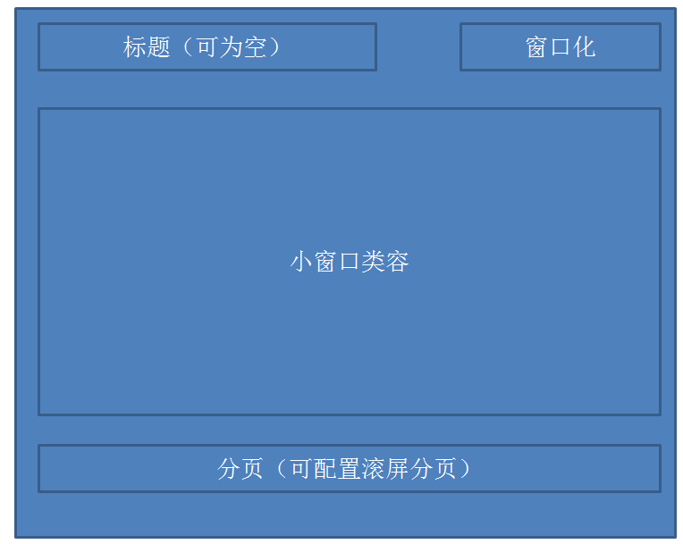

前言
之前我们遇到了这么一个项目，也就是我们昨天提到的，有很多的小窗口的，昨天说的太抽象了，今天我们再来理一理什么是小窗口（后面点说下），当时由于js有一点复杂，我自己也装B跟风用了一下传说中MVC！！！
PS：最后读寒冬老师的文章说是MVC不合适用到前端，但是为什么用以及为什么不能用可能是我半年后才能理解的问题了。
其实，我当时对MVC的理解就停留在model view control的地步。。。。
项目几个月后，核心功能都实现了，但是不得不面临js文件激增的问题，有时候其它同事要插入进来，便有点困难，于是当时对核心的框架进行了一点重写，缓解了一些问题，但并未解决问题。。。。
后来的后来我就离开了，该项目我一直在关注着，只不过已经物是人非了，事实上我还是非常愿意投入进行这种富客服端的开发的，真的很有意思，话说对那家公司还有点留恋呢！
好了，现在我们来说说什么是“小窗口”吧，因为这几天我们会花一个星期左右的时间完成原来几个月左右的工作哟，当然是核心功能：），哈哈。
什么是小窗口
所谓小窗口便是：
① 我们一个小窗口数据来源是腾讯微博，需要形成腾讯微博app小窗口
② 我们一个小窗口数据来源新浪微博，需要形成新浪微博的小窗口
我们注意到以上2个的数据源与处理方式较一致，但是需要做处理，而且其鉴权也不尽相同，所以这个js代码有相同的，也有不相同的。
③ 我们的一个小窗口数据来源于百度RSS，需要形成点击标题展开的功能
④ 我们一个小窗口数据来源于XXX，其表现形式为选项卡......
⑤ 我们一个小窗口是flash，需要......
⑥ 我们一个小窗口是个综合应用，里面还会有定时器，自动的更新其数据
正所谓有图有真相，小叶子花了很多时间搞了几个图：
我们最近会做的
根据前面的那些图各位可能大概知道我们的“小窗口”是干神马的了，这里我再画一个图，描述下我们最近几天会完成的功能：
总体页面
单个小窗口
最大化

相信大家，对我们要做的有一个大概印象了，而且我们还会完成以下功能：
① 动态增加关注框（比如魔图），这里便需要考虑js代码激增
② 大家看到上面的分页导航了，我们可以将首页放不下的放到第二页
③ 小窗口彼此的摆放顺序可以拖动
......
还有的我们边看边做吧，因为我这里数据库方面不会太关注，所以搜索功能应该不会完成
MVC和我们有什么关系？
说实话，我不懂MVC，那是真不懂......
我搞过2年.net开发，也搞过将近一年的javascript开发，并且是传说中的ssh，我们都知道struts2是MVC，但是我对MVC的理解可谓一瓢浆糊，于是我昨天晚上专门去学习了一下什么是MVC，想总结点东西出来，但是结果大家都知道了，我交了白卷，看来看去所谓MVC便是：
模型（Model） “数据模型”（Model）用于封装与应用程序的业务逻辑相关的数据以及对数据的处理方法。“模型”有对数据直接访问的权力，例如对数据库的访问。
“模型”不依赖“视图”和“控制器”，也就是说，模型不关心它会被如何显示或是如何被操作。
但是模型中数据的变化一般会通过一种刷新机制被公布。为了实现这种机制，那些用于监视此模型的视图必须事先在此模型上注册，
从而，视图可以了解在数据模型上发生的改变。（比较：观察者模式（软件设计模式））
视图（View） 视图层能够实现数据有目的的显示（理论上，这不是必需的）。在视图中一般没有程序上的逻辑。
为了实现视图上的刷新功能，视图需要访问它监视的数据模型（Model），因此应该事先在被它监视的数据那里注册。
控制器（Controller） 控制器起到不同层面间的组织作用，用于控制应用程序的流程。
它处理事件并作出响应。“事件”包括用户的行为和数据模型上的改变。
我们来看看这个图，他是做得非常好的：
① 用户的所有交互与controller打交道
② controller处理用户信息（参数），传递给数据模型
③ 数据模型形成后在展示为相关视图
这样说还是太空洞，所以我们还是要用例子来说明：
MVC
1 <html xmlns="http://www.w3.org/1999/xhtml"> 2 <head> 3 <title></title> 4 <script src="../jquery-1.7.1.js" type="text/javascript"></script> 5 <script type="text/javascript"> 6 $(document).ready(function () { 7 var end = $('#end'); 8 $('#pili').change(function () { 9 var name = ''; 10 var p = $(this).val(); 11 if (p == '叶小钗') { 12 name = '刀狂剑痴'; 13 } 14 if (p == '一页书') { 15 name == '百世经纶'; 16 } 17 if (p == '素还真') { 18 name = '清香白莲'; 19 } 20 21 end.html(name + p); 22 }); 23 }); 24 </script> 25 </head> 26 <body> 27 <select id="pili"> 28 <option value="叶小钗">叶小钗</option> 29 <option value="一页书">一页书</option> 30 <option value="素还真">素还真</option> 31 </select> 32 <div id="end"></div> 33 </body> 34 </html>
以上的代码，我们经常用到，没有任何逻辑可言，但是一旦和“高级”的东西产生关系后，我们就有了一件圣衣，看着高深莫测，甚至我也可以装B。
PS：代码是我可耻的抄的。。。。但我可是自豪的一个字一个字的敲的哦，窃知识不算偷......
1 <html xmlns="http://www.w3.org/1999/xhtml"> 2 <head> 3 <title></title> 4 <script src="../jquery-1.7.1.js" type="text/javascript"></script> 5 <script type="text/javascript"> 6 $(document).ready(function () { 7 //定义一个controller 8 var piliController = { 9 //选择视图 10 start: function () { 11 this.view.start(); 12 }, 13 //将用户操作映射到模型更新上 14 set: function (name) { 15 this.model.setPerson(name); 16 } 17 }; 18 piliController.model = { 19 piliKV: { 20 '叶小钗': '刀狂剑痴', 21 '一页书': '百世经纶', 22 '素还真': '清香白莲' 23 }, 24 curPerson: null, 25 //数据模型负责业务逻辑和数据存储 26 setPerson: function (name) { 27 this.curPerson = this.piliKV[name] ? name : null; 28 this.onchange(); 29 }, 30 //通知数据同步更新 31 onchange: function () { 32 piliController.view.update(); 33 }, 34 //相应视图对当前状态的查询 35 getPiliAction: function () { 36 return this.curPerson ? this.piliKV[this.curPerson] + this.curPerson : '???'; 37 } 38 }; 39 piliController.view = { 40 //用户触发change事件 41 start: function () { 42 $('#pili').change(this.onchange); 43 }, 44 onchange: function () { 45 piliController.set($('#pili').val()); 46 }, 47 update: function () { 48 $('#end').html(piliController.model.getPiliAction()); 49 } 50 }; 51 piliController.start(); 52 }); 53 </script> 54 </head> 55 <body> 56 <select id="pili"> 57 <option value="叶小钗">叶小钗</option> 58 <option value="一页书">一页书</option> 59 <option value="素还真">素还真</option> 60 </select> 61 <div id="end"></div> 62 </body> 63 </html>
我们来看看这个神一样的代码。。。。
PS：我觉得我一段时间内会放弃MVC做项目啦。。。。
因为这样写开起来很高级，其实：
① 代码维护困难，至少我认为很困难
② 徒增复杂性，性能会有问题
③ 我并不能说服自己说自己懂了。。。。
所以，MVC暂时靠边站吧，我们下次来看看MVVM又是个什么东西。。。
结语
我们今天先是研究了我们这段时间会学习什么东西，然后对MVC做了一点研究，研究结束后我感觉我对MVC的理解稍微加深了一点，但是我们在做的过程中可能就不使用了。
我们下把来看看Mvvm又是个什么神器，然后逐步实现我们以上提出的功能，希望在下周便能结束javascript的学习，并重新学习HTML5的东西，响应式布局我们又有一段时间没有关注啦！
参考：
http://kb.cnblogs.com/page/41674/
百度百科
维基百科